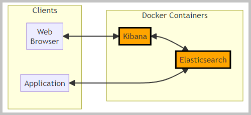
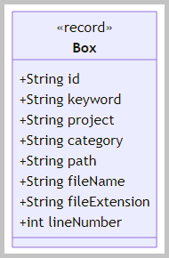
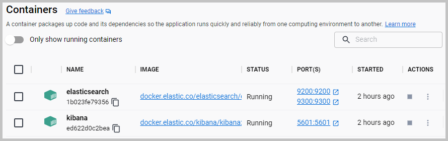
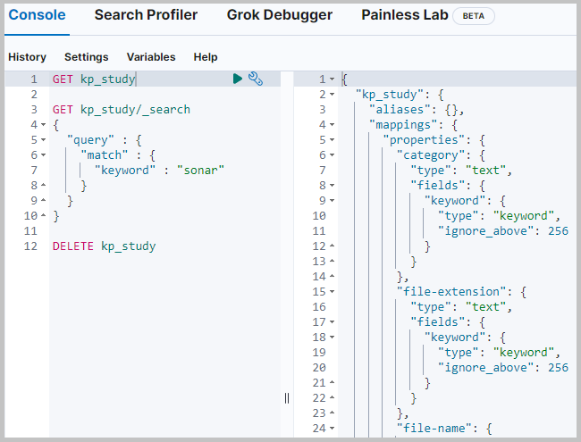

 The flowchart with Elasticsearch and Kibana.
The flowchart with Elasticsearch and Kibana.
The guides:
The sections of this project:
Java source code:

 kp
kp

The model object
'Box' class diagram.
Action:

 1. With the batch file
'01 Docker Elastic pull and run.bat' start the Docker container with Elasticsearch
1. With the batch file
'01 Docker Elastic pull and run.bat' start the Docker container with Elasticsearch
2. With the batch file
'02 Docker Kibana pull and run.bat' start the Docker container with Kibana
3. Take the enrolment token for Kibana from the console log (in the Docker 'elasticsearch' container).
4. Take the password from the console log (in the Docker 'elasticsearch' container).
5. With this password and user 'elastic' log in to Kibana
'http://localhost:5601/app/home#/'.
6. With this password replace the 'ELASTIC_PASSWORD' value in the file
'03 MVN clean install run.bat'.
7. With the command 'cat config/certs/http_ca.crt'
get the certificate content from the 'elasticsearch' container.
8. With that certificate replace the content of the certificate file
'resources\http_ca.crt'.
 1.1. The Docker containers.
1.1. The Docker containers.

The screenshot of the created Docker containers.
Action:
1. With the batch file
'03 MVN clean install run.bat' build and run the
'Application'.
2.1. The big file 'dataset.json' (about 800 KB)
was created in Solr project 'Study15'.
In that creation process were scanned the files from the 'Projects'.
Those files were filtered with the 'Keywords'.
In the method 'Application::main' the application for the elastic search client:
The method for recreating the index:
'KpService::recreateIndex'.
The method for creating and adding the
'Box' objects:
'KpService::addBoxesFromFile'.
The method for searching with the query:
'KpService::searchWithQuery'.
The screenshot of the console log from the run of the 'Application'.
Back to the top of the page| First Query | GET kp_study |
| Second Query | GET kp_study/_search
{
"query" : {
"match" : {
"keyword" : "sonar"
}
}
} |
Action:
1. With the URL
'http://localhost:5601/app/home#/' log in to the Kibana.
2. From the left side menu select the item "Management" / "Dev Tools".
3. Run in the Kibana console the first query and the second query.
3.1. The results of the first query.

The screenshot of the results fragment in the Kibana console.
3.2. The results of the second query.
The screenshot of the results in the Kibana console.
| Pie Chart | screenshot |
| Tree Map | screenshot |
| Bar Vertical Stacked | screenshot |
| Bar Horizontal | screenshot |
| Miscellany | ||||
| Study01 | Study02 | Study03 | Study04 | Study05 |
| Study06 | Study07 | Study08 | Study09 | Study10 |
| Study11 | Study12 | Study13 | Study14 | |
| Study17 | Study18 | Study19 | Study20 |
| @component | @controller | @document | @ejb | @entity | @getmapping | @inject | @messagedriven |
| @mockbean | @namedquery | @postmapping | @restcontroller | @springbootapplication | @springboottest | @stateless | @test |
| @transactional | @webmvctest | activemq | angularjs | asynchronous | bayes | camunda | cdi |
| checksum | circuitbreaker | collator | comparable | comparator | completablefuture | credentials | criteriaquery |
| cryptography | curl | cyclicbarrier | database | decrypt | docker | ellipticcurvecryptography | encrypt |
| entitymanager | entitymodel | flux | hateoas | jaxb | jboss | jpa | jquery |
| jsf | kafka | mapstruct | mockito | mockmvc | mongodb | mono | openapi |
| orchestration | patriciatrie | postgresql | reactive | reactivemongorepository | redis | restful | resttemplate |
| securerandom | soap | sonar | sonarqube | spotlight | spring | sslsocket | swagger |
| teeing | testresttemplate | thymeleaf | webclient | webflux | weld | wildfly | zoneddatetime |


{kind=link}
{kind=link}
{kind=link}
{kind=link}
{kind=link}
{kind=link}